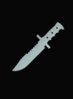
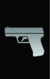
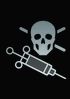
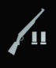
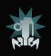
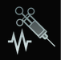
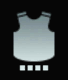
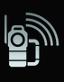
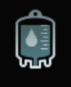

Об игре
Deceit это проверка на доверие, а также ваших инстинктов в многопользовательском шутере от первого лица.
Вы очнетесь в неизвестном месте от странного голоса вместе с пятью выжившими.
Треть из вас была заражена вирусом, но кто сможет выбраться?
С течением времени возникают перебои с электроэнергией погружая вас во тьму, позволяя инфицированным игрокам трансформироваться в форму “Ужаса”, и атаковать вас.
Найдите союзников и соберите предметы расположенные по всей карте чтобы увеличить ваши шансы на выживание.
Окружение было специально создано, для того чтобы вызвать конфликт среди членов вашей группы, создавая сомнения на счет истинных намерений игроков.
Зараженные попытаются покрывать друг друга, внося еще больше разногласий в команду, в то время как “Невиновные” будут следить за странным поведением других выживших и стараться найти тех, кому можно доверять.
Перебои с электроэнергией - это период, когда тьма окутывает карту, позволяя зараженным принять так называемую форму “Ужаса”.
В таком виде они намного быстрее, сильнее и имею ночное видение, с одной единственной слабостью - это свет.
В своем истинном обличии зараженные наводят ужас, а различные анимации убийства позволят игрокам создавать жуткие, но между тем смешные ситуации.
Карты
| ПРЕДМЕТ | ОПИСАНИЕ | ИЗОБРАЖЕНИЕ |
|---|---|---|
| Нож | Это единственное оружие ближнего боя в игре. Стандартно он наносит 50 урона |  |
| Пистолет | Это оружие дальнего боя по умолчанию. Каждое попадание наносит 40 урона, но в зависимости от активных навыков может нанести больше. В самом начале игры вы получаете 18 патронов: 9 зараженных и 9 в запасе. |  |
| Яд | Убивает любого игрока в человеческой форме. После инъекции запускается таймер до смерти, в это время игрока можно возродить с помощью антидота. |  |
| Дробовик | Это мощное оружие дальнего боя. Его урон зависит от количества попавших в цель дробинок. |  |
| Камера | Это световое оружие, которое используется против Ужаса и на время оглушает его. Выполнив задание, вы получаете 100% заряда по умолчанию, которого хватит на две вспышки. | |
| Фонарик | Это световое оружие длительного действия, которым можно временно оглушить Ужаса. Он наносит мало урона, но его заряд тратится достаточно медленно. | |
| Ловушка | Оглушает Ужаса, если он попадает в радиус ее действия. Выполнив задание, вы получаете 2шт по умолчанию. |  |
| Антидот | Нужен для воскрешения игрока, которого отравили ядом или казнил Ужас. |  |
| Броня | Броня даёт дополнительные 100 здоровья к обычному, но не регенерирует его. Максимальный уровень брони: 100, максимум здоровья: 200 (здоровье + броня). Отражает одну атаку Ужаса. |  |
| Прибор сканирования | Позволяет проверить одного игрока на наличие вируса. После проверки он покажет 100% верный результат заражен игрок или нет, но только тому, кто провел сканирование. |  |
| Трекер | При установке на игрока подсвечивает его очертание на 30 секунд. | |
| Пакет крови | Пакеты с кровью разбросаны по карте и могут использоваться лишь зараженными. Выпивая кровь в дневное время, зараженный получает одну полоску крови. Ночью, пакеты крови недоступны для взаимодействия. |  |
| Аптечка | Аптечка постепенно восстанавливает здоровье до 100. При активном навыке "Как новенький", восстанавливает сразу 25 очков здоровья. |  |